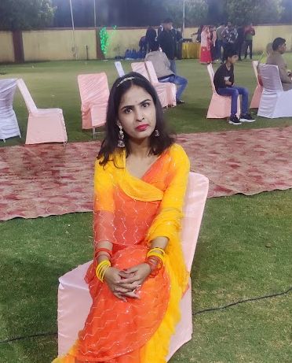
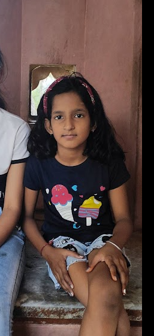
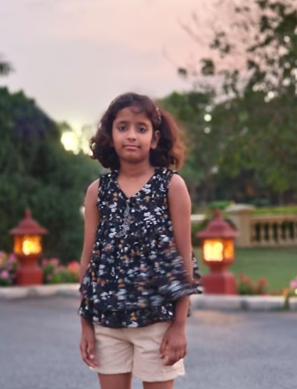

"Hello, I am Aditya Pratap Singh Shekhawat, and it brings me joy to introduce my incredible family. We share a close-knit bond and create beautiful memories together.
First and foremost, I am blessed with loving parents who have been the guiding light in my life. They have showered me with endless love, support, and encouragement, helping me navigate life's challenges and celebrate its triumphs.
Alongside my parents, I have my amazing siblings who are not just my brothers and sisters but also my closest friends. We have shared countless adventures, laughter, and heartfelt moments that have strengthened our bond. We stand by each other, offering unwavering support and celebrating each other's achievements.
In addition to my immediate family, I have wonderful aunts, uncles, and cousins who are an integral part of our lives. We cherish the time we spend together, creating lasting memories filled with love and laughter. Their presence enriches our family gatherings and adds a vibrant touch to our lives.
Our family is built on a foundation of love, respect, and unity. We value each other's individuality and embrace our differences. Together, we navigate through life's ups and downs, providing strength and encouragement to one another.
I am truly grateful for the love and support of my family. They have played a pivotal role in shaping the person I am today, and their presence fills my life with warmth and happiness. Our bond is a testament to the power of love and the importance of family."
My grandfather, who passed away in December 2018, was an extraordinary man who played a significant role in shaping our family and community. He was a farmer, and his dedication to the land and his craft was truly inspiring.
As the head of our family, my grandfather commanded great respect and admiration. His words carried weight, and everyone looked to him for guidance and direction. We all recognized his wisdom and leadership, and it was clear that his decisions were made with the utmost consideration for our well-being.
Beyond the confines of our family, my grandfather's influence extended throughout the community. He was highly regarded and held in high esteem by his peers. Other farmers sought his advice, and he willingly shared his knowledge and experience, always ready to lend a helping hand. His generosity knew no bounds, and he selflessly contributed to the betterment of our community.
Though my grandfather may no longer be physically present, his legacy lives on. The values he instilled in us, his unwavering work ethic, and his unwavering commitment to family and community continue to inspire us every day. We cherish the memories of his leadership and the profound impact he had on our lives.
As time passes, we remember him not only as a farmer but also as a man of integrity, compassion, and strength. His influential presence and the respect he commanded serve as a constant reminder of the remarkable person he was.
My grandmother, who passed away in December 2020, was an incredible woman who continues to inspire me even today. Despite her advanced age, she possessed an agility and swiftness that surpassed many younger individuals. It was truly remarkable to witness her energy and vitality.
Above all, my grandmother was a deeply spiritual and devout person. She led a life centered around her faith and was regarded as a holy figure within our family. Her commitment to her religious practices was unwavering. She would bathe three times a day, partaking in the cleansing ritual, and would diligently engage in daily prayers and pooja, connecting with her spirituality in a profound way.
One of the things that I admired most about my grandmother was her calm demeanor and gentle nature. She never engaged in gossip or backbiting, and her words were always filled with kindness and positivity. Her ability to maintain inner peace and radiate tranquility was truly awe-inspiring.
Although my grandmother has passed on, her influence and teachings remain etched in my heart. Her dedication to spirituality, her ability to maintain calmness, and her unwavering devotion serve as a constant reminder of the person I strive to be. Her presence in our lives was a blessing, and I am grateful for the memories and the values she imparted upon us.
Even in her absence, her legacy continues to guide and inspire us. Her example of living a life steeped in faith, kindness, and tranquility is a cherished gift that will forever be treasured by our family.
My father, Dilip Singh, is an incredible man who has had a significant impact on my life. At 53 years old, he is a builder by occupation and is known for his relentless work ethic and unwavering honesty. He has always been a man of principles, never compromising on his values regardless of the circumstances.
One of the most admirable qualities about my father is his incredible work ethic. He puts in long hours and works tirelessly to provide for our family. Despite the challenges that come with his occupation, he never shies away from hard work, always striving to give his best and deliver exceptional results.
Beyond his dedication to his work, my father's integrity and honesty shine through in everything he does. He believes in doing what is right, even when it may be difficult or unpopular. His unwavering commitment to truth and honesty has earned him the respect and admiration of those around him.
Despite facing his own challenges and shortcomings, my father has always prioritized the well-being and success of his children. He has made countless sacrifices to ensure that we receive the best education and opportunities in life. He has taken on the responsibility of supporting our family single-handedly after the passing of my grandfather, displaying immense strength and determination.
My father's love and dedication to his family are unparalleled. He has been our rock, providing guidance, support, and unconditional love. His selflessness and willingness to put our needs before his own have shaped me into the person I am today.
I am truly grateful for the sacrifices my father has made and the values he has instilled in me. His hard work, honesty, and principled nature serve as constant reminders to strive for excellence and to always stay true to myself. I am proud to call him my father, and I am inspired by his resilience and unwavering commitment to our family..
My mother, Mukut Kanwar, is an incredible woman who has dedicated her life to caring for our family. As a housewife, she has played a vital role in shaping our lives and providing us with a nurturing and loving home environment.
Despite the challenges of raising three children and facing adverse health conditions, my mother has always put our needs first. Her selflessness and unwavering dedication to our well-being have been evident in every aspect of her life. She has made countless sacrifices to ensure that we receive the best education and opportunities.
Despite the demands of motherhood and her own health struggles, my mother has been a beacon of strength and resilience. Her determination and perseverance have been an inspiration to us all. She has overcome obstacles with grace and has never allowed her health conditions to hinder her commitment to our family.
Above all, my mother has been our guiding light. She has provided us with not only a comfortable home but also the right education and guidance to help us navigate through life. Her wisdom, patience, and unconditional love have shaped our values and instilled in us a strong moral compass.
My mother's unwavering support and sacrifices have given us the confidence and determination to pursue our dreams. She has always been our biggest cheerleader, encouraging us to reach for the stars and providing the guidance we needed to stay on the right path.
I am forever grateful to my mother for her endless love and dedication. Her strength, selflessness, and unwavering commitment to our family have left an indelible mark on my life. She is not just a housewife but the heart and soul of our family. Her love and sacrifices have shaped us into the individuals we are today, and her influence will continue to guide us throughout our lives..
Pushp Kanwar, affectionately known as Nanisa Hukum, is a remarkable woman who has played a significant role in our lives. From our childhood, she has been there for us, raising us with love, care, and guidance. Her nurturing presence has shaped us into the individuals we are today.
One of Nanisa Hukum's notable qualities is her calculative nature. She possesses a keen sense of observation and is skilled at analyzing situations with precision. Her ability to make thoughtful decisions and assess the outcomes has been instrumental in guiding us along the right path.
Nanisa Hukum also embodies strength, both in character and resilience. She has faced challenges with grace and determination, showing us the importance of perseverance in the face of adversity. Her unwavering strength has been a source of inspiration for us, encouraging us to overcome obstacles and strive for success.
In addition to her calculative and strong nature, Nanisa Hukum is deeply spiritual and grounded. Her connection to her faith and spirituality brings a sense of calmness and serenity to her presence. She serves as a source of wisdom, guiding us through life's ups and downs with a steady hand.
Throughout our journey, Nanisa Hukum has been a pillar of support and a source of unconditional love. Her selflessness and dedication to our well-being have been unwavering. We are grateful for the guidance and care she has provided, shaping us into the individuals we are today.
In summary, Nanisa Hukum, Pushp Kanwar, is a calculative, strong, spiritual, and calm lady who has been a guiding light in our lives. Her nurturing presence, resilience, and wisdom have left an indelible mark on our hearts. We cherish the memories we have shared with her and appreciate the invaluable lessons she has taught us along the way..
Santosh Kanwar,my Bhuasa Hukum, holds a special place in our family. She is an embodiment of calmness and sobriety, radiating a serene presence wherever she goes.
Despite the challenges she faces,Bhuasa Hukum has taken on the responsibility of single-handedly caring for her entire family. My Fufosa Hukum resides in a foreign country, making her the pillar of strength and support for her loved ones. Her dedication and selflessness in shouldering this responsibility is truly remarkable.
Bhuasa Hukum possesses a particular nature, paying attention to the smallest details in everything she does. Her precision and meticulousness are evident in her actions, reflecting her desire for excellence. She takes great care in ensuring that everything is in order, leaving no room for negligence.
Beyond her meticulous nature, Bhuasa Hukum is a kind-hearted, humble, and sweet lady. Her warmth and compassion shine through in her interactions with others. She loves me immensely, and her affectionate nature makes me feel cherished and valued. She holds my words in high regard, considering them as final decisions.
Bhuasa Hukum's unwavering support and unconditional love have made a lasting impact on our family. Her calm demeanor and gentle nature bring a sense of peace and harmony to our lives. Her love and care have been a constant source of comfort, and her presence is a blessing to us all.
I am grateful to have them as my Bhuasa, and I cherish the love and bond we share. Her strong sense of responsibility, humility, and unwavering support make her an exceptional woman. She is an inspiration to me, and her love and affection are treasures that I will always hold close to my heart.
Bhanwar Mahendra Singh, my Fufosa Hukum, is a distinguished gentleman who embodies a unique blend of charm, wisdom, and a zest for life. His handsome appearance is matched by his calm and composed demeanor, making him a captivating presence in any room.
One of Fufosa Hukum's notable qualities is his ability to remain calm in all situations. Regardless of the circumstances, he maintains a sense of serenity and composure, which is admired by those around him. His composed nature allows him to approach challenges with a clear mind, making thoughtful decisions based on careful consideration.
In addition to his calm disposition, Fufosa Hukum radiates happiness and sobriety. His positive outlook on life and his ability to find joy in the simplest of things is truly inspiring. His infectious laughter and warm smile light up the room, creating an atmosphere of happiness and positivity.
Behind Fufosa Hukum's affable nature lies a sharp and calculative mind. He possesses a keen intellect and has a knack for analyzing situations with precision. This calculative approach helps him make informed decisions, ensuring that he remains firm in his choices and actions.
Despite his composed and calculated nature, Fufosa Hukum also knows how to have fun. He appreciates the importance of enjoying life's moments and creating memorable experiences. Whether it's through engaging conversations, laughter-filled gatherings, or pursuing his passions, he knows how to infuse joy into every aspect of his life.
In summary, Bhanwar Mahendra Singh, Fufosa Hukum, is a handsome, calm, and smart gentleman who brings a unique blend of wisdom, sobriety, and joy to our lives. His ability to remain composed, make calculated decisions, and find happiness in all situations is truly admirable. We are fortunate to have him in our lives, as his presence adds a touch of grace and fun to every moment we share..
Gulab Singh Tanwar,my Mamosa Hukum, is a remarkable man who exudes strength and determination. His unwavering willpower and powerful presence make him a force to be reckoned with. From his handsome appearance to his resolute character, he leaves a lasting impression on everyone he meets.
One of Mamosa Hukum's notable qualities is his incredible strength, both physically and mentally. He possesses a robust physique and a strong spirit, allowing him to overcome challenges with ease. His determination and perseverance serve as an inspiration to those around him, encouraging us to push beyond our limits and achieve greatness.
Mamosa Hukum's unconditional love and unwavering support make him an invaluable presence in our lives. He is always there for us, ready to lend a helping hand and do whatever it takes to ensure our happiness and well-being. His selflessness and willingness to go above and beyond for our sake reflect his deep love and affection.
Furthermore, Mamosa Hukum's love for me is particularly special. The bond we share is a testament to his caring nature and the importance he places on our relationship. His presence brings comfort and reassurance, knowing that I have someone who loves me unconditionally and will always be there for me.
Gulab Singh Tanwar, Mamosa Hukum, is a strong, powerful, and handsome man whose love knows no bounds. His unwavering willpower, determination, and selflessness make him an extraordinary individual. We are fortunate to have him in our lives, as his presence brings strength, support, and boundless love..

Shweta Shekhawat, my elder sister, is an extraordinary individual who has achieved great success in her career as an engineer. As a software developer in an IT firm, she showcases her intelligence, skills, and dedication on a daily basis.
While Jija may have a tendency to get angry quickly, it is clear that her love for our family runs deep. She possesses a profound affection for each one of us and expresses it in her own unique way. Despite any momentary outbursts, her love for us remains steadfast and unwavering.
One of the most remarkable qualities about Jija is her unwavering work ethic. She is an exceptionally hardworking individual who consistently goes the extra mile to deliver outstanding results. Her determination and commitment to excellence are truly inspiring, and she sets a high standard for herself and others.
In addition to her strong work ethic, Jija Hukum is highly intelligent and passionate about her field. Her deep interest in software development and her continuous pursuit of knowledge have allowed her to stay at the forefront of advancements in technology. Her intelligence, combined with her passion, drives her to excel in her role and contribute significantly to her company's success.
I am immensely proud to have her as my sister. Her hard work, intelligence, and passion serve as a constant source of inspiration for me. Despite her occasional bursts of anger, her love for us is immeasurable, and I am grateful to have her in my life. Shweta's dedication to her work and her unwavering love for our family make her a truly exceptional individual.
Shivani Shekhawat, my elder sister, is a remarkable individual known for her spiritual nature, kindness, and intelligence. She possesses a deep sense of spirituality, which guides her actions and beliefs, and she radiates a calm and serene presence.
Kindness is at the core of Shivani's character. She exemplifies compassion and empathy towards others, always willing to lend a helping hand. Her caring nature extends not only to our family but also to the people she encounters in her life. She has a genuine concern for others' well-being and goes out of her way to make a positive impact.
Shivani's intelligence is evident in her dedication to her studies. As she prepares for her banking exam, she demonstrates exceptional focus and determination. Her hard work and perseverance reflect her commitment to achieving her goals. She is not afraid to put in the necessary effort to excel in her endeavors.
Being emotional is one of Shivani's endearing qualities. She deeply feels the emotions and experiences of those around her. This sensitivity allows her to connect with others on a profound level, offering comfort and support when needed. Her emotional intelligence and understanding make her a trusted confidante and a source of solace.
Shivani holds a special place in our father's heart, and her bond with him is unique. Her love, respect, and admiration for our father are reciprocated in full, making her his favorite. Their close relationship is a testament to the strong connection they share and the mutual love and support they provide for each other.
I am truly blessed to have Shivani as my elder sister. Her spiritual nature, kindness, intelligence, and emotional depth make her an incredible role model and a source of inspiration. Her hard work and dedication to her studies show her determination to succeed, and her loving nature brings warmth and compassion to our lives.

Lakshita Rathore, my younger sister,lovingly i call her Cheena, holds a special place in my heart as she is the closest among all my siblings. While she may be quiet and reserved, her intelligence shines brightly, distinguishing her as a truly remarkable individual.
Although Lakshita may not have a keen interest in studying ,Mathematics, if i become particular, her natural intelligence allows her to grasp concepts effortlessly. She possesses a sharp intellect and a deep understanding of the world around her. Her ability to think critically and analytically sets her apart, making her a source of inspiration.But whenever She is studying She puts her best.
However, it is not always smooth sailing with Lakshita. She can be quick to anger, and it often takes considerable effort on my part to help restore her mood to normal.It's make me anxious when she is sad or angry. But through it all, I recognize her passionate nature and the depth of her emotions, which add to her uniqueness.She is jolly and Spontaneous in an environment where she Feels free and open to thoughts , otherwise she has her own dimension.
Lakshita is incredibly sensible and has a remarkable level of maturity for her age. Her ability to understand complex situations and make sound decisions is truly commendable. She approaches life with a level-headedness that is beyond her years, and her insights are often sought after by those around her.
I share almost everything with her and she too, most of my sins are listed by her only.She has a caring and compassionate nature, always willing to lend a helping hand to those in need. Her thoughtfulness and consideration for others make her a beloved member of our family and community.
Her intelligence, passion, and sensible nature combine to create a truly remarkable individual. Lakshita's intellectual pursuits and her desire to broaden her horizons make her an inspiration to everyone who knows her. She has the potential to achieve greatness in whatever path she chooses to pursue.And She Loves Mangoes by the way.
I cherish the bond I share with Lakshita, and I consider myself fortunate to have such a remarkable sister. Her intelligence, passion, and sensibility make her the best, and I am proud to witness her growth and accomplishments. She continues to amaze me with her remarkable qualities, and I am excited to see what the future holds for her.
Siddhi Singh Tanwar, my younger sister, is an incredibly innocent and adorable girl who brings immense joy to our family. Her childlike innocence and genuine nature make her a delight to be around.
One of Siddhi's defining characteristics is her love for food. She has a remarkable appreciation for culinary delights and finds joy in indulging in delicious meals. It's as if her mind is always occupied with thoughts of food, which adds a unique charm to her personality.
What sets Siddhi apart is her unwavering optimism and ability to find happiness in every situation. She has a positive outlook on life and maintains a cheerful demeanor, regardless of the challenges she faces. Her optimistic approach inspires those around her and reminds us to embrace the brighter side of life.
Siddhi's passion for food and her imaginative mind can sometimes make studying a challenge for her. Her visualizations of delectable dishes may distract her from focusing on her studies. However, it is this creative and imaginative side of Siddhi that brings a sense of wonder and excitement to her experiences.
Despite any difficulties she may encounter, Siddhi's determination shines through. She approaches tasks with enthusiasm and a willingness to learn. Her innocence and curiosity serve as catalysts for her growth and development, allowing her to explore the world with wide-eyed wonder.
Siddhi's presence in our family brings an abundance of happiness and joy. Her innocent nature, love for food, and unwavering optimism make her a truly endearing individual. I cherish the moments we share, and her delightful personality adds a special charm to our lives. Siddhi's ability to find happiness in the simplest of things is a constant reminder to appreciate life's little pleasures..

Prerna Rathore, my younger sister, is a joyful and wonderful girl who brings a vibrant energy to our family. Her jolly nature is contagious, and her infectious laughter can light up any room.
Prerna is known for her kind-heartedness and genuine goodness.
Although Prerna may occasionally disobey me, I understand that it is a natural part of her growth and independence. Despite these moments of disagreement, her overall character remains admirable and full of positivity. Her actions are rooted in a desire to explore the world and assert her own individuality.
Her jolly spirit and positive outlook on life make her a joy to be around. She finds happiness in the simplest of things and has a remarkable ability to bring smiles to the faces of those around her. Prerna's enthusiasm for life is contagious, and she inspires us all to appreciate the beauty in everyday moments.
I am grateful to have Prerna as my younger sister. Her jolly nature, goodness, and ability to see the bright side of life are qualities that I deeply admire. While we may have our differences at times, our bond remains strong, and I cherish the special moments we share together. Prerna's presence in our family brings a sense of joy and happiness, and I am proud to call her my sister.

Riddhi Singh Tanwar, my younger sister, is a bundle of energy and vitality. Her active nature and quick thinking make her a dynamic and engaging individual to be around.
One of Riddhi's standout qualities is her sharp mind. She possesses an impressive intellect and is always eager to learn and explore new ideas. Her quick thinking allows her to grasp concepts swiftly and engage in meaningful conversations. Riddhi's mental agility is a testament to her curiosity and thirst for knowledge.
In addition to her intellectual capabilities, Riddhi has a gift for communication. She is a natural conversationalist and has a way with words that captivates those around her. Her ability to express herself effectively makes her a delightful presence in any gathering. Riddhi's sweet and charming demeanor further adds to her endearing personality.
Furthermore, Riddhi's active nature ensures that she is always on the go. She is filled with energy and enthusiasm, constantly seeking new experiences and opportunities for growth. Her vibrant spirit inspires others to embrace life with a similar zest and zest for adventure.
Riddhi's presence in our family brings a sense of liveliness and joy. Her active nature, quick mind, and sweet disposition make her an absolute delight to be around. I cherish the moments we share, and her lively spirit adds a dynamic element to our lives. Riddhi's ability to engage with others and her vibrant personality make her a beloved member of our family.
Karan Pratap Singh Rathore, my younger brother, is a unique and special individual with distinct qualities that set him apart. He possesses a particular nature, paying great attention to detail and striving for precision in everything he does. His meticulous approach reflects his desire for excellence and ensures that he gives his best in all endeavors.
One defining trait of Karan is his emotional nature. He feels deeply and is not afraid to express his emotions. This sensitivity allows him to connect with others on a profound level and to empathize with their experiences. Karan's emotional depth adds richness and authenticity to his relationships, making him a caring and supportive presence in our lives.
Karan has a tendency to stay in his own world, often immersing himself in his thoughts and interests. This introspective nature enables him to reflect on life's complexities and gain a deeper understanding of himself and the world around him. While he may enjoy solitude, he also values meaningful connections and cherishes the company of loved ones.
Though he been continously fighting with Cheena and Pihu is not something i appreciate.
Among his endearing qualities, Karan's unwavering obedience stands out. He respects and honors my words, demonstrating his trust and belief in me. His willingness to obey reflects his loyalty and commitment to our bond as siblings. We share a special connection, and Karan's love for my company strengthens our relationship.
I am grateful to have Karan as my younger brother. His particular nature, emotional depth, and loyalty make him a remarkable individual. I cherish the moments we spend together, appreciating his unique perspective and the love he brings to our family. Karan's presence adds depth and warmth to our lives, and I am proud to call him my brother.